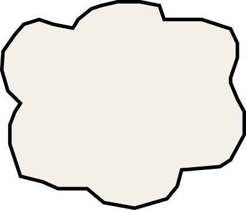
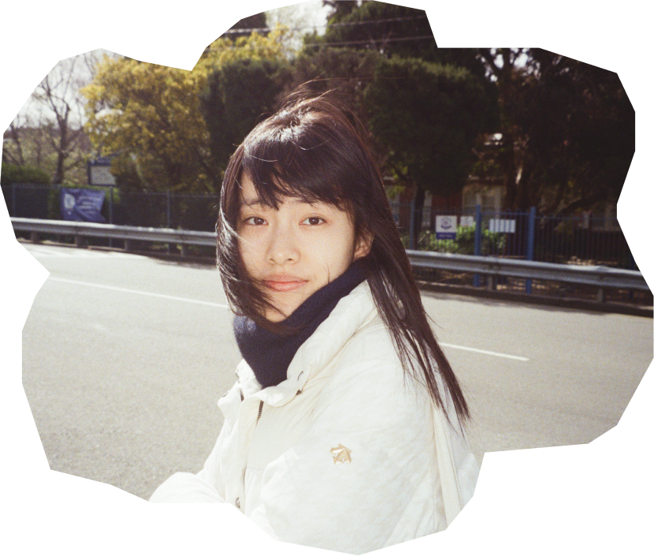

Hi, I’m Bettie
And I’m a
product designer.

A little more about me
Currently studying UX Design in Melbourne.
Interested in people, interactions, and the little details of everyday life.
I design, draw, take photographs, and occasionally get lost in my own thoughts.